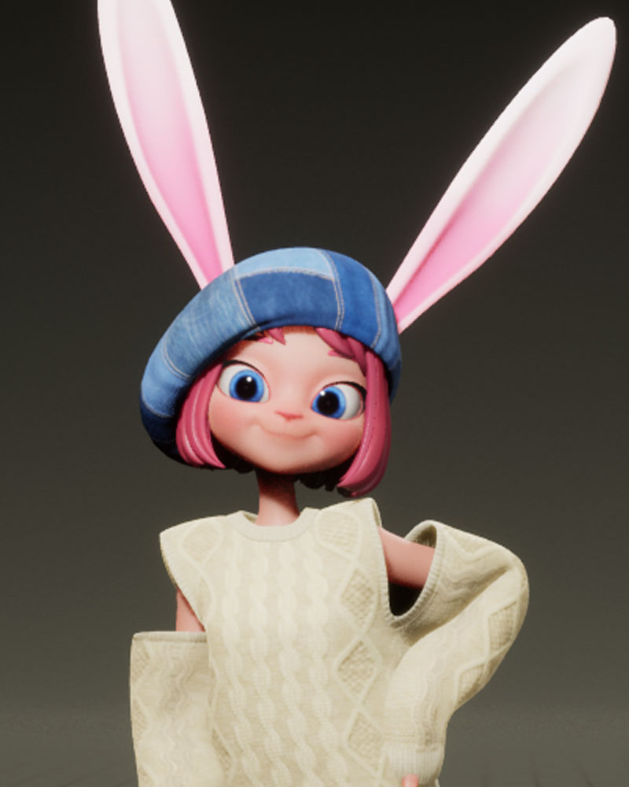

APOKI comenzó a formar parte de nuestras vidas en abril del 2019, momento en el que comenzamos a ver vídeos suyos a través de YouTube. Pero más tarde fue abriendo más redes sociales hasta convertirse en un super influencer que reúne más de dos millones de seguidores. La artista virtual APOKI se le conocía por sus increíbles covers de canto y baile. En el que no sólo sorprendía por su capacidad vocal, sino por el gran universo y trabajo digital que había detrás de cada uno de sus vídeos gracias a su agencia VV Entertainment.

En estos vídeos podemos encontrarla sola, o acompañada incluso por cuerpos de baile reales.
Algo a destacar es que no conocemos la identidad que se esconde tras APOKI,
por lo que sólo conocemos al avatar de conejo tan carismático, pero no a la
cara tan increíble que hay detrás. Esto ya pasó en 1998 conocimos al artista
virtual Adam, del cual no se supo su identidad real hasta 2018
Ahora, tras estos años subiendo vídeo y sorprendiendo con sus directos, la
artista APOKI se lanza con su propia canción en solitario. El debut de APOKI
como solista la convierte en una de las pocas idols virtuales de K-Pop, dando un
paso más allá en este universo virtual en el que Corea del Sur está avanzando
con mucho interés
 Los creadores de contenido o streamers virtuales en Corea del Sur están emergiendo con mucha fuerza, y se puede encontrar una gran variedad de ellos. Los cuales hacen contenido de todo tipo, ya sea en vídeos o directos, sobre comida, juegos, charlas, baile... Pero APOKI no se queda en plataformas como YouTube, sino que ha debutado como artista de K-Pop.
APOKI se presenta con el tema GET IT OUT, canción muy adictiva que ha triunfado a nivel mundial. Como siempre, el vídeo de este tema está muy bien producido y nos sumerge de lleno en la historia.
Además de contar con un tema original, la coreografía es original, y ha encantado a todos los que eran fans de esta artista. Algo que ha gustado mucho a todos los seguidores de APOKI es que la artista virtual y su equipo han generado numerosos contenidos alrededor de este debut. Como puede ser un concurso mundial de covers de baile, que se hizo en directo, o incluso relay dance o práctica de baile.

Sobre el autor

Little Tangerine
Diseñadora gráfica. El mundo del K-POP me absorbió en un salón del manga y desde entonces soy más feliz y más pobre. Suelo perder el tiempo en twitter, llorando por Min Yoongi. Vivo sin un rumbo fijo, pero así es todo más divertido. Una buena taza de café para comenzar bien el día.
2 Comentarios
Leave a Reply
Próximas entradas

Favoritos Mayo 2021
12 May, 2021
Moda coreana: Seúl trends 2021
20 May, 2021
11 K-dramas que no te puedes perder
31 May, 2021Anuncios

Scroll to Top
Lisa Y 5 hours ago
Amo esta canción. Tan pegajoso. Pero también quiero decir la cantidad de detalles que se ponen en la animación, el entorno, etc. Es increíble. Como persona que estudia animación, la mayor parte del tiempo pasa mucho tiempo simplemente animando y el resultado final solo puede ser de 10 segundos. Para hacer esto durante toda una canción. Increíble.
Evelin Lh6 hours ago
Me salió en recomendados y simplemente ame la canción y el vídeo, obra maestra la animación y la canción bien pegadiza
Reply